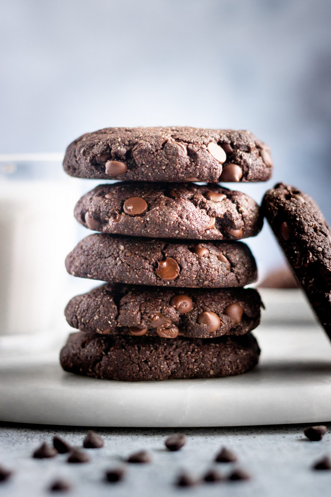

Cookie Duplo Chocolate

Description
Delicious double chocolate cookies
Ingredients
- 8 colheres de sopa de açucar mascavo
- 4 de leite
- 4 de óleo
- 2 de cacau
- 16 de trigo
- ½ fermento
- ½ xícarade chocolate picado
Steps
- Adicione em uma vasilha o açucar, o cacau, o leite o e o óleo e misture
- Inclua os demais ingredientes e misture
- Faça bolinhas e coloque em uma forma
- Asse a 200°C por 12 a 20 minutos